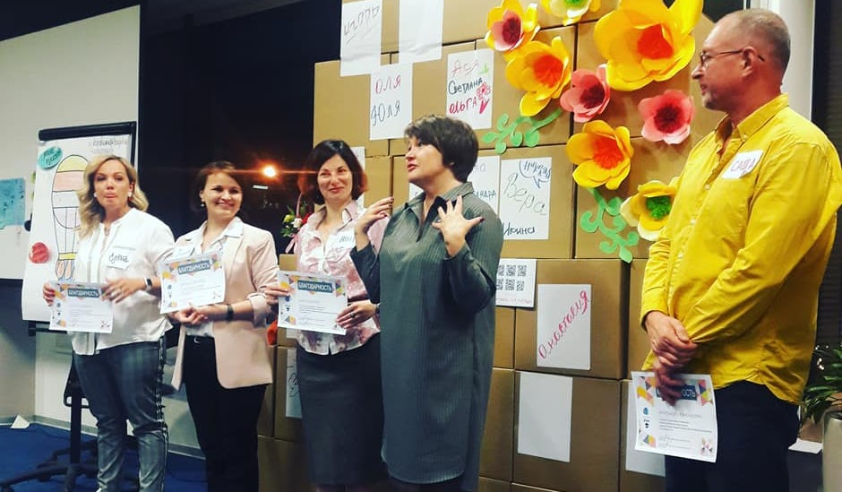

Схематизация
ПЕРВАЯ ОТКРЫТАЯ ЛАБОРАТОРИЯ ВИЗУАЛЬНОГО МЫШЛЕНИЯ
15 СЕНТЯБРЯ 2018 г.
Сайт лаборатории
webarchive
Таймкоды к видеозаписи лаборатории (площадка МФТИ)
Горбань А.Н.
Разница естественного и искусственного в визуальном мышлении
слайды
Воронцов К.В.
Визуализация в информационном поиске
Лемтюжникова Д.
Картографическое представление текстового контента
Финошин О.А.
Визуальный анализ – выявление скрытых проблем и путей и решений в больших массивах данных: медицина, производство, транспорт и др.
Тарасенко В.В.
«Слепые пятна», перипетии и узнавания визуального мышления (кейс фрактальной геометрии)
Берхин И.
Пространство мышления 🎦
Полевая С.А.
Взаимодействие визуального и вербального информационных образов при развитии лингвистических компетенций.
Нехорошева Е.
Сверхпредметность и универсальность инструментов современных психотерапевтических модальностей в исследованиях и развитии социальных практик (на примере современного экзистенциального анализа)
Соболева Е.В., Шалагинова Н.В.
Виртуальный помощник в определении интеллектуальной компетентности для подготовки специалистов профессий будущего
Рубанов В.А.
Геометрические методы представления данных и построения смысловых алгоритмов.
Злотников И.В.
Визуализация в проекте AETERNUM
Зиновьев А.
Нестандартные и интерактивные методы визуализации знаний и данных для решения прикладных задач;
Мокроусова Ю.
Схематизация в маркетинге, поддержка (формирование) бренда.
Легуша Д.
Как рисовать незримое. Сравнительный анализ методов визуализации абстрактных понятий
Новичков А.
Влияние новых инструментов графического и мультимедийного дизайна на доступность использования визуального мышления. Обзор средств и выводы
Лима М.
Visualization Metaphors: Unraveling the Big Picture
Панельная дискуссия научных партнеров Лаборатории. Участвуют: Голубин Р.В. (декан Факультета социальных наук Университета Лобачевского), Аверина С. (начальник отдела сопровождения научных программ Российский Университет кооперации), Фетисов А.В. (зам.зав.кафедрой политических и общественных коммуникаций Института общественных наук), Иванова Е.В. (зав.лабораторией образовательных инфраструктур института системных проектов ГАОУ ВО МГПУ, к.пс.н., доцент), Горбань А.Н. (зав.Центром Математического Моделирования и кафедрой прикладной математики University of Leicester) Воронцов К.В. (руководитель лаборатории машинного интеллекта МФТИ)
расшифровка
Секция практической визуализации
(площадка Deloitte )
Роуди М.
The Story of Sketchnotes. Последовательный перевод на русский
Хабибова А.
Ментальные карты в обучении дизайну
Максименкова О.
Использование интеллект-карт в учебном процессе
Бикбулатов А.
Диджитал скрайбинг, как структурировать мозг
Обновление страницы:
📺 Видео

